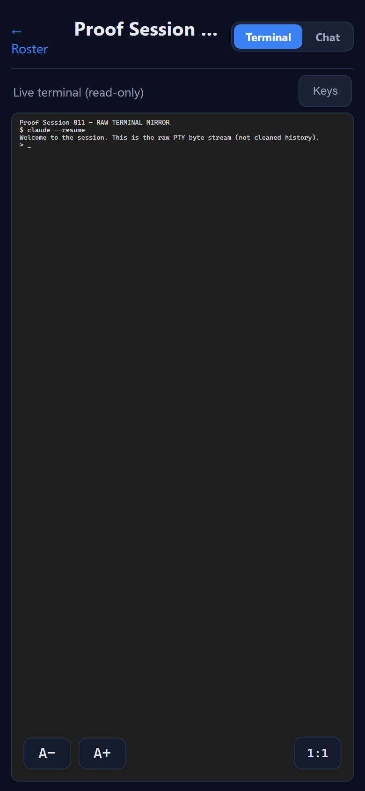
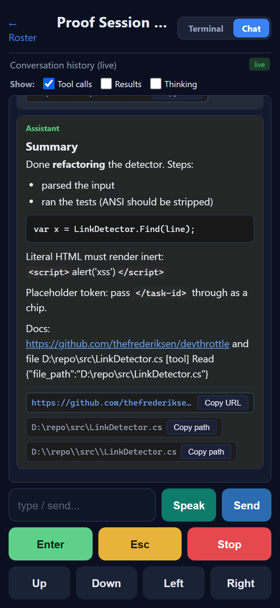
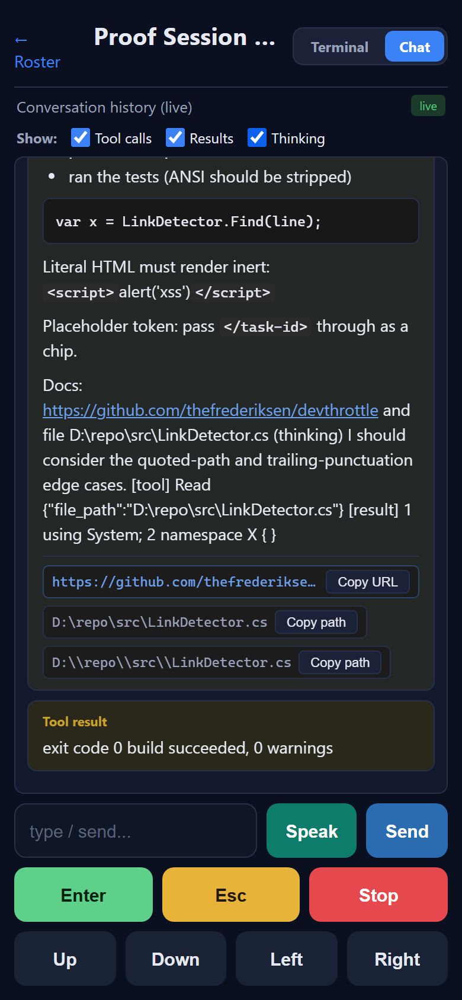
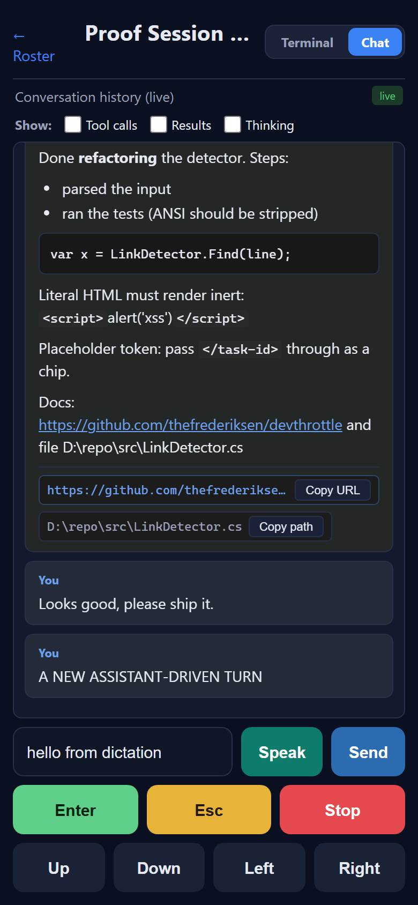
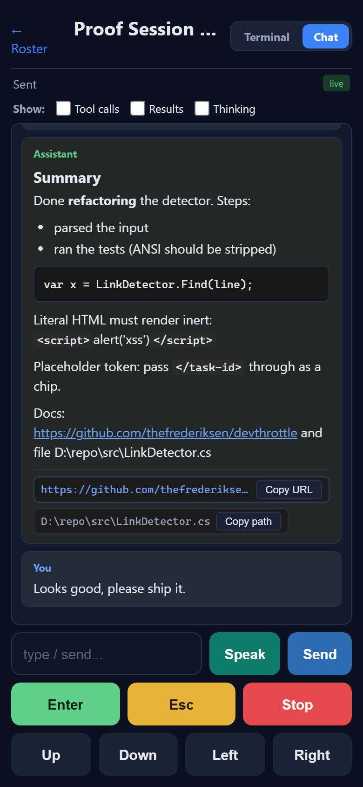
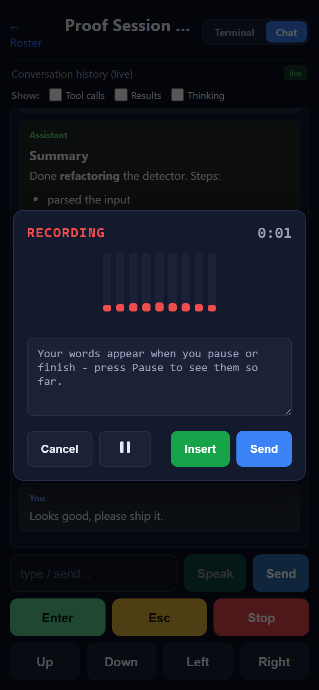
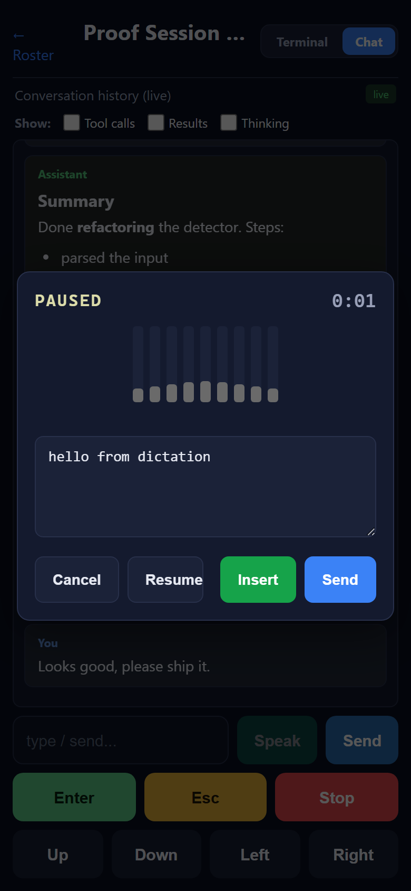
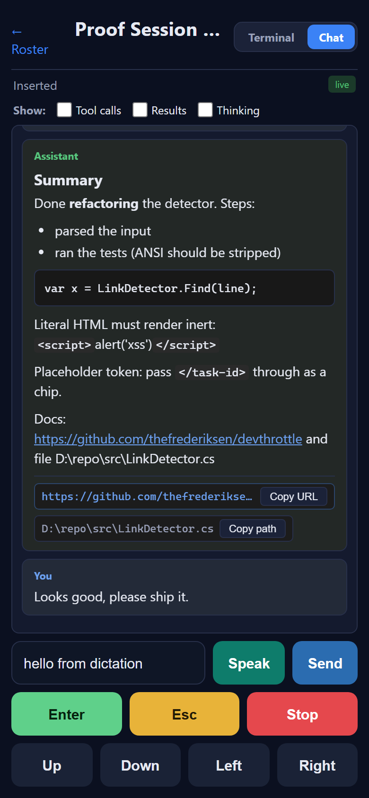
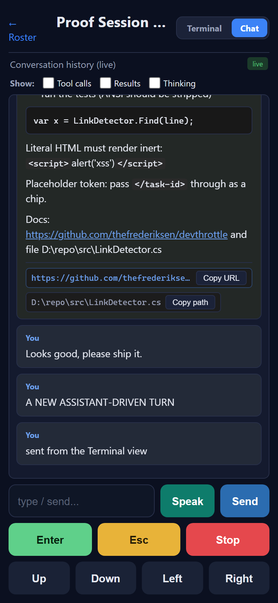
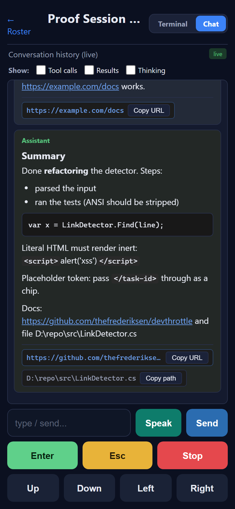

<!DOCTYPE html>
<html lang="en">
<head>
<meta charset="utf-8" />
<meta name="viewport" content="width=device-width, initial-scale=1" />
<title>Issue #811 - Chat mode - Developer Agent proof</title>
<style>
  body { font-family: -apple-system, "Segoe UI", Roboto, Arial, sans-serif; background: #0b1020; color: #e6e9f2; margin: 0; padding: 24px; line-height: 1.5; }
  h1 { font-size: 22px; } h2 { font-size: 17px; margin-top: 28px; border-bottom: 1px solid #28304a; padding-bottom: 6px; }
  code { font-family: "Cascadia Mono", Consolas, monospace; background: #1b2238; padding: 1px 5px; border-radius: 3px; font-size: 12px; }
  .ac { background: #141a2e; border: 1px solid #28304a; border-radius: 10px; padding: 14px 16px; margin: 14px 0; }
  .pass { color: #57c77d; font-weight: 700; }
  .meta { color: #99a0b8; font-size: 13px; }
  img { max-width: 360px; width: 100%; border: 1px solid #28304a; border-radius: 8px; display: block; margin: 8px 0; }
  table { border-collapse: collapse; margin: 8px 0; font-size: 13px; }
  th, td { border: 1px solid #28304a; padding: 5px 10px; text-align: left; vertical-align: top; }
  .ev { background: #11162a; border-left: 3px solid #3b82f6; padding: 8px 12px; font-family: "Cascadia Mono", Consolas, monospace; font-size: 12px; white-space: pre-wrap; border-radius: 0 6px 6px 0; }
</style>
</head>
<body>

<h1>Issue #811 - Mobile Chat mode: faithful translation of the desktop History tab</h1>
<p class="meta">Developer Agent proof - branch <code>issue-811-chat-history</code> off main <code>7c820fda</code>.
Phone viewport 390x844. Driven against a mock that serves the REAL built mobile bundle
(<code>mobile/dist</code>) and faithfully mocks the Gateway session contract; the history endpoint is
already reachable through the Gateway's catch-all <code>/sessions/{sid}/{**rest}</code> proxy with the
injected Bearer (<code>SessionWsProxyEndpoints.cs</code>), so no backend change was needed or made.</p>

<h2>What was implemented</h2>
<ul>
  <li>A <strong>Chat view</strong> for a session (<code>mobile/src/pages/Chat.tsx</code>, route
      <code>/session/:sessionId/chat</code>) rendering the cleaned conversation <strong>history</strong>
      from <code>GET /sessions/{sid}/history</code>, NOT the raw terminal.</li>
  <li>1:1 TypeScript ports of the desktop source of truth:
      <code>history/bubbleMapper.ts</code> (HistoryBubbleMapper - classification + truncation caps +
      filter), <code>history/historyText.ts</code> (HistoryText.CleanForReading - ANSI + wrapper-tag
      strip + placeholder wrapping), <code>history/historyMarkdown.ts</code> (Markdown with HTML
      DISABLED via <code>marked</code> + new-tab anchors), <code>history/historyLinks.ts</code>
      (LinkDetector subset: URLs + absolute paths).</li>
  <li><strong>Default = prompts + responses only</strong>; tool calls / results / thinking hidden by
      default, each behind a persisted (<code>localStorage ccHistoryFilter</code>) Show: toggle.</li>
  <li><strong>Live poll ~2.5s</strong> with a signature change-detector (count + total chars + tail +
      state + filter) and sticky-bottom auto-follow only when at the bottom.</li>
  <li>Shared <code>components/SessionControls.tsx</code> (input + Speak + Send + Enter/Esc/Stop/arrows
      + the #817 DictationDialog), reused by BOTH Terminal and Chat, and a
      <code>components/ViewTabs.tsx</code> Terminal/Chat toggle. Terminal was refactored onto the same
      shared component (behavior unchanged).</li>
</ul>

<h2>Logic parity (the ports match the desktop C# behavior exactly)</h2>
<p>14 parity checks (<code>logic_test.ts</code>) run the ported modules against the desktop
Cockpit.Tests cases - all PASS: ANSI strip, wrapper-block drop, slash-command unwrap, placeholder
wrapping (and untouched inside code spans), URL+absolute-path detection (relative NOT guessed),
default You+Assistant-only mapping, all-on folding and assistant body order.</p>
<div class="ev">PASS plain prose unchanged ... PASS ANSI stripped ... PASS default: You + Assistant(text only), tool-result bubble hidden ... PASS all on: assistant body order
ALL PARITY CHECKS PASSED</div>

<h2>Acceptance criteria (Expected vs Actual)</h2>

<div class="ac"><span class="pass">AC1 PASS</span> - A Terminal/Chat toggle switches to the Chat view showing cleaned history, not the raw terminal.
<br><span class="meta">Expected: Chat shows readable bubbles; Terminal shows raw PTY. Actual: same session, same toggle - Chat (02) vs raw mirror "RAW TERMINAL MIRROR / raw PTY byte stream (not cleaned history)" (14).</span>
</div>

<div class="ac"><span class="pass">AC2 PASS</span> - By default only "You" prompts and the Assistant's responses show; the session HAS tool calls / results / thinking, all hidden.
<br><span class="meta">Actual (02): Show: checkboxes all unchecked; the Assistant bubble shows only its text - no <code>[tool]</code>, no <code>[result]</code>, no <code>(thinking)</code>, and the pure tool-result bubble is omitted.</span>
</div>

<div class="ac"><span class="pass">AC3 PASS</span> - Toggling Tool calls / Results / Thinking reveals each kind (and the tool name); unchecking hides them again.
<br><span class="meta">Actual: enabling all three (05) folds in <code>(thinking) ...</code>, <code>[tool] Read {...}</code>, <code>[result] ...</code> and reveals the gold "Tool result" bubble; back to default (06) hides them again. Intermediate steps 03 (tool calls) and 04 (results).</span>
</div>

<div class="ac"><span class="pass">AC4 PASS</span> - Bubbles match the desktop History rendering: You vs Assistant distinguishable, Markdown rendered (HTML disabled), ANSI/wrapper tags cleaned, links clickable.
<br><span class="meta">Actual (06): heading/bold/bullets/fenced code render; the literal <code>&lt;script&gt;alert('xss')&lt;/script&gt;</code> renders INERT as text (HTML disabled); the ANSI line shows "ran the tests" with no escape codes; the <code>&lt;system-reminder&gt;</code> block is gone; <code>&lt;/task-id&gt;</code> is a code chip; URL + absolute path get Copy URL / Copy path.</span>
</div>

<div class="ac"><span class="pass">AC5 PASS</span> - Transcript updates live (~2.5s) without yanking a scrolled-up reader.
<br><span class="meta">Actual: scrolled to top, a new turn arrived via the 2.5s poll; scroll position did not move.</span>
<div class="ev">scrollTop before append (scrolled up) = 0
scrollTop after a new turn arrived    = 0
no-yank PASS = True</div>
</div>

<div class="ac"><span class="pass">AC6 PASS</span> - Typing + Send submits to the session (POST /prompt 2xx) and the new user turn appears.
<br><span class="meta">Actual: the "You: Looks good, please ship it." turn appears (07); wire body below.</span>
<div class="ev">POST /sessions/{sid}/prompt  body={"text":"Looks good, please ship it.","appendEnter":true}</div>
</div>

<div class="ac"><span class="pass">AC7 PASS</span> - Control keys behave identically to Terminal (captured request bodies).
<table>
<tr><th>Key</th><th>Request</th></tr>
<tr><td>Enter</td><td><code>POST /prompt {"text":"\r","appendEnter":false}</code></td></tr>
<tr><td>Esc</td><td><code>POST /escape</code></td></tr>
<tr><td>Stop</td><td><code>POST /interrupt</code></td></tr>
<tr><td>Up / Down / Left / Right</td><td><code>POST /prompt {"text":"|[B|[D|[C","appendEnter":false}</code></td></tr>
</table>
</div>

<div class="ac"><span class="pass">AC8 PASS</span> - Speak opens the SAME shared dictation dialog (RECORDING -> TRANSCRIBING -> PAUSED, Cancel / Pause-Resume / Insert / Send); Insert/Send place/submit the transcript.
<br><span class="meta">Actual: dialog RECORDING (09), then PAUSED with the transcript "hello from dictation" and the four buttons (10), then Insert drops it into the input box (11). Driven with Chrome fake audio.</span>
</div>

<div class="ac"><span class="pass">AC9 PASS</span> - The user can move between Chat and Terminal for the same session and both control it.
<br><span class="meta">Actual: a Send issued from the Terminal view appears in the SAME session's Chat history alongside the Chat-issued and live-update turns (15).</span>
</div>

<div class="ac"><span class="pass">AC10 PASS</span> - Every history and control call carries the Bearer token and the view works with Gateway auth on AND off.
<br><span class="meta">Auth ON: history + every prompt/escape/interrupt carry <code>Authorization: Bearer ...</code>; the WS stream carries the token via cookie (browsers cannot set a WS Authorization header - by design). Auth OFF: the page is served without an injected token, the history call carries no Authorization and still returns 2xx, and the Chat renders identically (16).</span>
<div class="ev">AUTH ON : GET  /sessions/{sid}/history  auth=Bearer ***  -> 2xx
AUTH ON : POST /sessions/{sid}/prompt   auth=Bearer ***
AUTH OFF: GET  /sessions/{sid}/history  auth=NONE        -> 2xx</div>
</div>

<h2>CenCon impact</h2>
<p>No drift. <code>mobile/</code> is the React PWA container (not a .NET container); no
<code>architecture_manifest.yaml</code> container changes and no
<code>security_profile.yaml</code> change. The history endpoint already exists and is proxied with the
Bearer (catch-all session proxy, unchanged); one build-time npm dependency (<code>marked</code>) was
added inside the existing mobile container. A routine Debug <code>dotnet build cc-director.sln</code>
still does not invoke npm (the mobile MSBuild target is release-gated; zero .NET files changed).</p>

<h2>Reproduce</h2>
<p><code>mobile/dist</code> is built with <code>npm run build</code>; then
<code>python drive_proof.py</code> (in this folder) starts <code>mock_gateway.py</code> on a free port,
serves the bundle, seeds a session that has tool calls + thinking, and drives Chromium at a phone
viewport with fake media. Wire logs: <code>requests-auth-on.jsonl</code> /
<code>requests-auth-off.jsonl</code>.</p>

<h2>Conclusion</h2>
<p class="pass">I believe this is finished. All ten acceptance criteria are met and proven, the mobile
build is clean (tsc + vite), and the ported logic matches the desktop behavior 1:1.</p>

</body>
</html>
